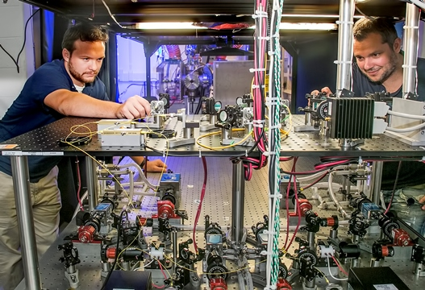

Research

Introduction to Plasma Nanosynthesis
Plasma and Material Processes in Atmospheric Pressure Plasmas
Atomistic Simulations of Plasma-Generated Nanomaterials
Coherent Rayleigh-Brillouin Scattering (CRBS)
Laser-Induced Incandescence (LII)
Laser-Induced Fluorescence (LIF)
Optical Emission Spectroscopy (OES)
Theory and Simulations of Low Temperature Plasma Devices
Plasma Modeling: Ablation/Deposition in Arc Discharge
Plasma Modeling: Plasma-Induced Effects on Nanoparticles